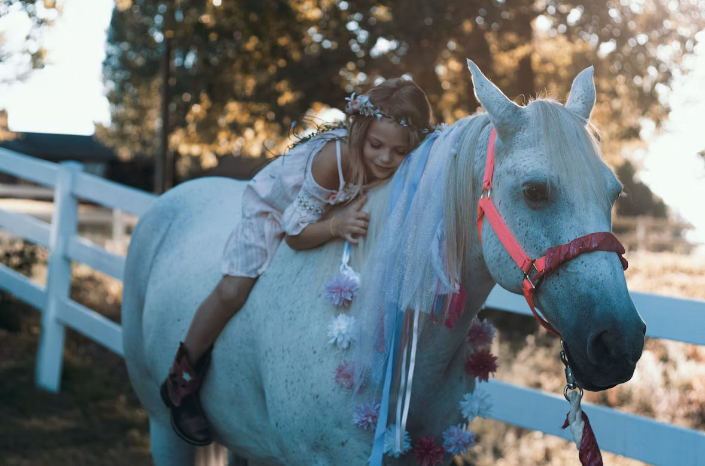

lyspunkt
Et lysere blikk på verden.
Forsiden
Norge
Verden
Vitenskap
Små gleder
Dagens topp 3
Sveip →
01
✓ Bekreftet
Klima · Verden
Endelig:
Korallrevet vokser tilbake
[Journalist] · 07:42 · Illustrasjonsfoto
02
Siste nytt
07:15
Ny malariavaksine godkjent i flere land
06:58
Studenter fikk kontakt med egen satellitt
Forsiden
Siste
Små gleder
Søk
Forside, mobil
Logo med kategorier under. Topp 3 som like store kort man sveiper mellom, deretter Siste nytt.

Små gleder · 1 av 4
×
Små gleder
Hver fredag:
Hele barnehagen kommer på besøk til Bjørka
Demoartikkel · Illustrasjonsfoto
Fikk meg til å smile
Les saken ↑
Små gleder som story
Story-formatet brukes nå bare i Små gleder — der det passer best.